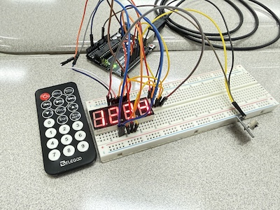

Arduino Project
An IR remote controls number input and displays output on a 4-digit 7-segment display. This project helped me understand components, pin control, and signal decoding.

Arduino Code
#include <IRremote.hpp>
int pinA = 13;
int pinB = 7;
int pinC = 4;
int pinD = 3;
int pinE = A2;
int pinF = 10;
int pinG = 5;
int D1 = 12;
int D2 = 9;
int D3 = 8;
int D4 = 6;
const int MULTIPLEX_DELAY_MS = 3;
#define IR_RECEIVE_PIN 11
typedef uint64_t IR_CODE_TYPE;
#define CODE_0 (IR_CODE_TYPE)0xE916FF00
#define CODE_1 (IR_CODE_TYPE)0xF30CFF00
#define CODE_2 (IR_CODE_TYPE)0xE718FF00
#define CODE_3 (IR_CODE_TYPE)0xA15EFF00
#define CODE_4 (IR_CODE_TYPE)0xF708FF00
#define CODE_5 (IR_CODE_TYPE)0xE31CFF00
#define CODE_6 (IR_CODE_TYPE)0xA55AFF00
#define CODE_7 (IR_CODE_TYPE)0xBD42FF00
#define CODE_8 (IR_CODE_TYPE)0xAD52FF00
#define CODE_9 (IR_CODE_TYPE)0xB54AFF00
#define CODE_EQ (IR_CODE_TYPE)0xE619FF00
long receivedNumber = 0;
int digitCount = 0;
const int MAX_DIGITS = 4;
int d_thousands = 0;
int d_hundreds = 0;
int d_tens = 0;
int d_ones = 0;
void setup() {
Serial.begin(9600);
IrReceiver.begin(IR_RECEIVE_PIN, DISABLE_LED_FEEDBACK);
pinMode(pinA, OUTPUT); pinMode(pinB, OUTPUT); pinMode(pinC, OUTPUT); pinMode(pinD, OUTPUT);
pinMode(pinE, OUTPUT); pinMode(pinF, OUTPUT); pinMode(pinG, OUTPUT);
pinMode(D1, OUTPUT); pinMode(D2, OUTPUT); pinMode(D3, OUTPUT); pinMode(D4, OUTPUT);
all4Digits();
turnOffAllSegments();
}
void loop() {
if (IrReceiver.decode()) {
IR_CODE_TYPE command = IrReceiver.decodedIRData.decodedRawData;
int number = -1;
switch (command) {
case CODE_0: number = 0; break;
case CODE_1: number = 1; break;
case CODE_2: number = 2; break;
case CODE_3: number = 3; break;
case CODE_4: number = 4; break;
case CODE_5: number = 5; break;
case CODE_6: number = 6; break;
case CODE_7: number = 7; break;
case CODE_8: number = 8; break;
case CODE_9: number = 9; break;
default: break;
}
if (number != -1) {
if (digitCount < MAX_DIGITS) {
receivedNumber = (receivedNumber * 10) + number;
digitCount++;
mapCountToDigits(receivedNumber);
}
} else if (command == CODE_EQ) {
receivedNumber = 0;
digitCount = 0;
}
IrReceiver.resume();
}
turnOffAllSegments();
displayNumber(d_thousands);
digit1();
delay(MULTIPLEX_DELAY_MS);
turnOffAllSegments();
displayNumber(d_hundreds);
digit2();
delay(MULTIPLEX_DELAY_MS);
turnOffAllSegments();
displayNumber(d_tens);
digit3();
delay(MULTIPLEX_DELAY_MS);
turnOffAllSegments();
displayNumber(d_ones);
digit4();
delay(MULTIPLEX_DELAY_MS);
}
void mapCountToDigits(long number) {
d_thousands = number / 1000;
d_hundreds = (number % 1000) / 100;
d_tens = (number % 100) / 10;
d_ones = number % 10;
}
void displayNumber(int num) {
turnOffAllSegments();
switch (num) {
case 0: zero(); break;
case 1: one(); break;
case 2: two(); break;
case 3: three(); break;
case 4: four(); break;
case 5: five(); break;
case 6: six(); break;
case 7: seven(); break;
case 8: eight(); break;
case 9: nine(); break;
}
}
void turnOffAllSegments() {
digitalWrite(pinA, HIGH); digitalWrite(pinB, HIGH); digitalWrite(pinC, HIGH);
digitalWrite(pinD, HIGH); digitalWrite(pinE, HIGH); digitalWrite(pinF, HIGH); digitalWrite(pinG, HIGH);
}
void zero() { digitalWrite(pinA,HIGH); digitalWrite(pinB,HIGH); digitalWrite(pinC,HIGH); digitalWrite(pinD,HIGH); digitalWrite(pinE,HIGH); digitalWrite(pinF,HIGH); digitalWrite(pinG,LOW); }
void one() { digitalWrite(pinA,LOW); digitalWrite(pinB,HIGH); digitalWrite(pinC,HIGH); digitalWrite(pinD,LOW); digitalWrite(pinE,LOW); digitalWrite(pinF,LOW); digitalWrite(pinG,LOW); }
void two() { digitalWrite(pinA,HIGH); digitalWrite(pinB,HIGH); digitalWrite(pinC,LOW); digitalWrite(pinD,HIGH); digitalWrite(pinE,HIGH); digitalWrite(pinF,LOW); digitalWrite(pinG,HIGH); }
void three() { digitalWrite(pinA,HIGH); digitalWrite(pinB,HIGH); digitalWrite(pinC,HIGH); digitalWrite(pinD,HIGH); digitalWrite(pinE,LOW); digitalWrite(pinF,LOW); digitalWrite(pinG,HIGH); }
void four() { digitalWrite(pinA,LOW); digitalWrite(pinB,HIGH); digitalWrite(pinC,HIGH); digitalWrite(pinD,LOW); digitalWrite(pinE,LOW); digitalWrite(pinF,HIGH); digitalWrite(pinG,HIGH); }
void five() { digitalWrite(pinA,HIGH); digitalWrite(pinB,LOW); digitalWrite(pinC,HIGH); digitalWrite(pinD,HIGH); digitalWrite(pinE,LOW); digitalWrite(pinF,HIGH); digitalWrite(pinG,HIGH); }
void six() { digitalWrite(pinA,HIGH); digitalWrite(pinB,LOW); digitalWrite(pinC,HIGH); digitalWrite(pinD,HIGH); digitalWrite(pinE,HIGH); digitalWrite(pinF,HIGH); digitalWrite(pinG,HIGH); }
void seven() { digitalWrite(pinA,HIGH); digitalWrite(pinB,HIGH); digitalWrite(pinC,HIGH); digitalWrite(pinD,LOW); digitalWrite(pinE,LOW); digitalWrite(pinF,LOW); digitalWrite(pinG,LOW); }
void eight() { digitalWrite(pinA,HIGH); digitalWrite(pinB,HIGH); digitalWrite(pinC,HIGH); digitalWrite(pinD,HIGH); digitalWrite(pinE,HIGH); digitalWrite(pinF,HIGH); digitalWrite(pinG,HIGH); }
void nine() { digitalWrite(pinA,HIGH); digitalWrite(pinB,HIGH); digitalWrite(pinC,HIGH); digitalWrite(pinD,LOW); digitalWrite(pinE,LOW); digitalWrite(pinF,HIGH); digitalWrite(pinG,HIGH); }
void all4Digits() {
digitalWrite(D1, HIGH);
digitalWrite(D2, HIGH);
digitalWrite(D3, HIGH);
digitalWrite(D4, HIGH);
}
void digit1() { all4Digits(); digitalWrite(D1, LOW); }
void digit2() { all4Digits(); digitalWrite(D2, LOW); }
void digit3() { all4Digits(); digitalWrite(D3, LOW); }
void digit4() { all4Digits(); digitalWrite(D4, LOW); }